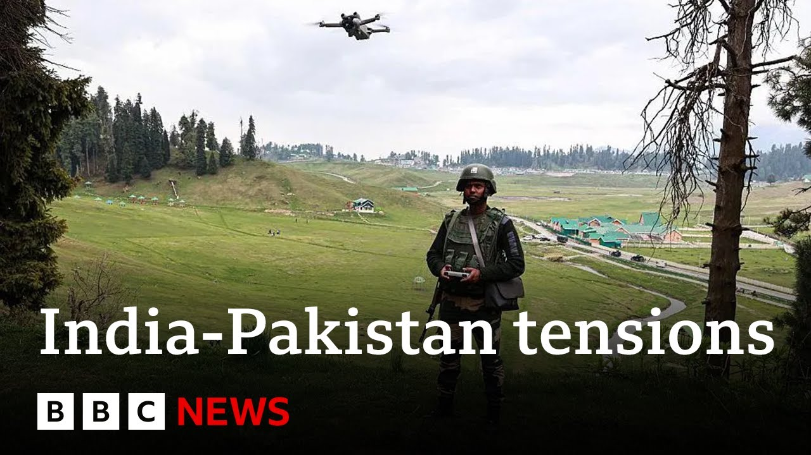

来B站一起耍【Global每日英语简报】
【巴基斯坦否认以印度军事基地为目标 | BBC新闻】
Summary: Pakistan rejects India's claims of missile and drone attacks on three military stations, with tensions rising after a deadly Kashmir attack.
摘要： 巴基斯坦否认印度关于导弹和无人机袭击三个军事哨所的说法，克什米尔致命袭击后紧张局势升级。

⏱️ Estimated Reading Time: 6 min
Pakistan has rejected allegations from India that it sent missiles and drones to attack three of its military stations.
巴基斯坦否认了印度关于其发射导弹和无人机袭击三个军事哨所的指控。
The Indian army said it foiled attacks on its bases in Jammu and Udampur in Indian administered Kashmir and in Path &ot in India's Punjab state.
印度军方称挫败了对其在印控克什米尔的查谟和乌达姆普尔以及印度旁遮普邦帕特军事基地的袭击。
Pakistan's defense minister said if his country had attacked, everyone would know it.
巴基斯坦国防部长表示，如果该国发动攻击，所有人都会知道。
Tensions have been escalating between the neighbors since a deadly attack which killed 26 people in Kashmir last month.
自上月在克什米尔造成26人死亡的致命袭击以来，两国紧张局势不断升级。
when I speak to our correspondent in Shriner Deina Gupta.
当我与我们在斯利那加的记者迪娜·古普塔交谈时。
So tell us let us the latest on these uh what we think are these attacks or whether we can get any further information for sure about what these attacks were.
请告诉我们关于这些袭击的最新情况，或者我们是否能进一步确认这些袭击的细节。
But for now, we are relying on official sources from the Indian Army, which made it clear last night, as you mentioned, that Pakistan had fired missiles and drones at three of its military uh installations and it has been able to neutralize these attacks, a charge that Pakistan has denied.
但目前我们依赖印度军方的官方消息，昨晚明确表示巴基斯坦向三个军事设施发射了导弹和无人机，但已被挫败，巴基斯坦否认了这一指控。
The uh Indian army also said there's been no loss of life in these areas so far.
印度军方还表示，目前这些地区没有人员伤亡。
But right now I'm in Shinagar in the Indian administered Kashmir surrounded by green hills next to a local lake which has house boats which are on a standill.
但现在我在印控克什米尔的斯利那加，周围是青山，旁边是一个有停泊船屋的湖泊。
The shops are shut here.
这里的商店都关门了。
Uh just uh in front of me there's also a yellow security van of the Indian armed forces.
在我面前还有一辆印度军队的黄色安保车。
There are hardly any people on the road which conveys a sense of a heightened security concern.
路上几乎没有人，显示出高度安全戒备的状态。
Uh I can also tell you that it was a long anxious night for locals here because a blackout was also enforced in this part of Indian administered Kashmir and fears that there could be a further escalation of tension spilling out here.
我还了解到，当地居民度过了一个漫长焦虑的夜晚，因为印控克什米尔部分地区实施了停电，人们担心紧张局势可能进一步升级。
But this morning the electricity has been restored but most of the schools and colleges are shut here.
但今天早上电力已恢复，大多数学校和学院仍关闭。
The civilian airspace also is closed down so there are no flights coming in or out of this place.
民用领空也已关闭，因此没有航班进出该地区。
and in several other cities in India in this region.
以及该地区的其他几个印度城市。
So it is an anxious time for people out here in anticipation of what's going to happen next and what efforts are being made to try to deescalate.
因此，这里的人们正焦虑地等待下一步发展以及缓和局势的努力。
Well, one of the things that the Indian side is doing is also repeating its um statement that it is it it what happened earlier this week when it targeted uh nine sides at the Pakistani side.
印度方面正在重申其声明，即本周早些时候针对巴基斯坦九个目标的行动。
It said it was in retaliation to the deadly attack which happened on its soil for which it blamed Pakistan again and it said that in that one uh 26 tourists were killed but that it said was the limited operation on quote unquote terror infrastructure and it doesn't want to escalate tensions at the same time sending a strong message that it won't back down if uh Pakistan continues to provoke India in different ways which again Islamabad continues to deny.
印度称这是对本土致命袭击的报复，并再次指责巴基斯坦，称袭击造成26名游客死亡，但强调行动仅针对“恐怖基础设施”，不希望升级紧张局势，同时警告若巴基斯坦继续挑衅不会退缩，伊斯兰堡则继续否认。
Today we know that Indian defense minister will be meeting uh several armed forces chiefs.
今天我们知道印度国防部长将与几位武装部队首长会面。
So we'll have to wait and see what comes out of that meeting.
因此我们需等待会议结果。
So far we are waiting also to hear if there will be a formal press briefing for journalists to know what comes next.
目前我们还在等待是否会举行正式新闻发布会以了解下一步行动。
And in the meantime when you speak to people there how concerned are they about the security situation?
与此同时，你与当地人交谈时他们对安全局势有多担忧？
Well, I did go to some of those regions at the line of control which is a de facto border dividing Kashmir between India and Pakistan and they're extremely concerned because just last night as well there were reports of an intense artillery shelling in that zone.
我确实去过控制线附近的一些地区，这是印巴实际分界线，当地人非常担忧，因为昨晚还有该地区激烈炮击的报道。
So when I went there yesterday I could see that many locals were uh fleeing and evacuating those areas and going towards safety.
昨天我去那里时看到许多当地人逃离并疏散到安全地带。
One of one family that I met said that they just had to leave everything overnight.
我遇到的一个家庭说他们不得不连夜抛下一切离开。
One person in their family couldn't even wear slippers when they were going out and had to walk for hours to reach and seek shelter among their relatives.
他们家中有人甚至来不及穿拖鞋就出门，步行数小时投奔亲戚。
U they also told me that there was a lady in the group who had to grab her one-month old child and leave that area immediately because they suddenly heard a loud bang and outside their house.
他们还告诉我，同行的一位女士不得不抱起她一个月大的孩子立即离开，因为突然听到屋外巨响。
Now uh these stories are often the same that we are hearing from that region which seems to be witnessing the worst of escalated tensions between the two neighbors.
这些故事在该地区屡见不鲜，似乎正经历两国间最严重的紧张局势升级。
Deina Gupta, thank you very much indeed for that update.
迪娜·古普塔，非常感谢你的最新报道。